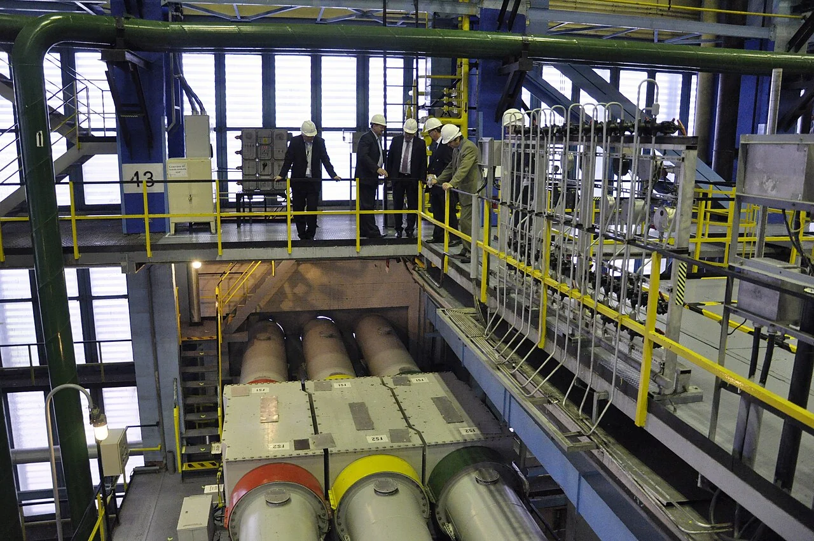
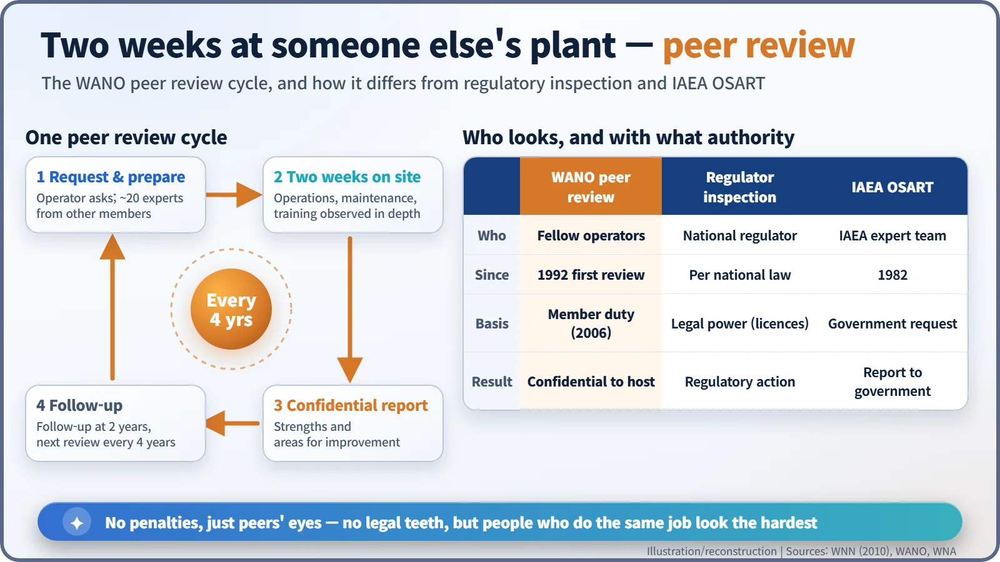
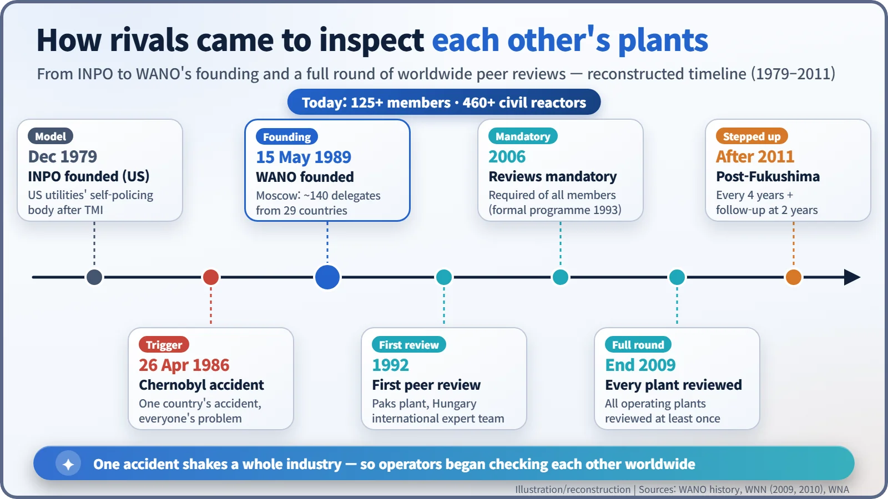
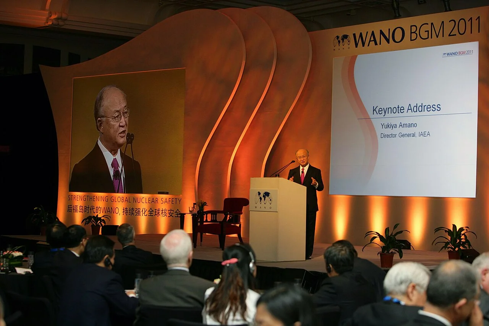

Nuclear History · 260
Handing Your Plant Keys to a Rival? — The Founding of WANO, the World Association of Nuclear Operators (1989)
Three years after Chernobyl, rival operators agreed to let each other's experts spend two weeks inside their plants and write frank, confidential reports.
On 15 May 1989, three years after Chernobyl, nuclear plant operators from both sides of the Cold War met in Moscow and founded the World Association of Nuclear Operators (WANO). It has no power to license or fine anyone. Instead, rival companies send their experts to spend two weeks inside each other's plants and write frank, confidential reports on what could be better.
Handing your plant keys to a rival
Picture this. One morning about twenty engineers from a competing company walk into your factory and stay for two weeks. They watch your control-room shifts, leaf through your maintenance records and follow your trainees around. Then they leave you a report that says, in effect, "here is where you are weak." Most businesses would call security. In the nuclear industry, it is part of the routine.
The world's nuclear power plants have been doing exactly this to one another for more than thirty years. It all started in Moscow on 15 May 1989. [1] [3]

A founding meeting behind the Iron Curtain
The Chernobyl accident of 26 April 1986 taught the nuclear world a painful lesson. The accident happened at a single Soviet reactor, but radioactive material crossed borders and the damage to public trust landed on every nuclear plant on the planet. Someone else's accident, it turned out, was your crisis too.
The United States already had a template. After the Three Mile Island accident in 1979, American utilities set up INPO, the Institute of Nuclear Power Operations, in December of that year, to check one another's performance alongside government regulation. The idea now was to take that model across borders. [3] [5]
So on 15 May 1989 an inaugural meeting opened in Moscow. It was co-hosted by Walter Marshall (1932–1996), chairman of Britain's Central Electricity Generating Board (CEGB), and Nikolai Lukonin, the Soviet Minister of Atomic Energy. Around 140 delegates from 29 countries are reported to have signed the charter. Six months before the Berlin Wall fell, nuclear operators from both sides of the Cold War divide joined a single association for the first time. WANO's own history describes the moment as one in which "the leaders of every commercial nuclear reactor in the world set aside their competitive and regional differences." Marshall, a physicist who had chaired the UK Atomic Energy Authority from 1981 and was made a life peer, Baron Marshall of Goring, in 1985, served as WANO's chairman until 1993. [1] [6]
Not a regulator, but a club of peers
One point is essential. WANO is not a watchdog. It cannot issue licences or impose fines. It is a not-for-profit membership body funded by the companies that run nuclear plants. It set up its headquarters in London and regional centres in Atlanta, Moscow, Paris and Tokyo, and today it also has a base in Shanghai.
So how do you raise safety with no legal teeth? WANO relies on four main programmes: peer reviews, sharing operating experience, technical support and exchange, and professional development. In 1991 it published its first "good practice" document, on predictive maintenance. In 1998 it issued its first Significant Operating Experience Report (SOER), distilling lessons from important events at other plants so that members would not repeat them. [1] [5]
Two weeks of "peer eyes"
The peer review is the signature tool. In 1992 an international team of WANO experts carried out the first one, at Paks in Hungary, and the following year the reviews became a formal programme. At an operator's request, experts from other member companies spend about two weeks looking in depth at operations, maintenance, training and everything in between. The result is a "frank – and confidential – report" listing strengths and "areas for improvement." The confidentiality is deliberate: people will only lay their weaknesses on the table if they trust those weaknesses will not end up in the newspaper. [4]

It is also different from the IAEA's Operational Safety Review Teams (OSART), which have run since 1982. OSART missions are requested by governments and include regulators' staff; WANO is strictly a pact among operators. [5]
Reviews that began as voluntary passed the 200 mark in 2001 and became an obligation for members in 2006. In February 2010 WANO announced that by the end of 2009 every operating nuclear power plant in the world had been peer-reviewed at least once – at the time, 447 plants in more than 30 countries, many of them reviewed more than once. After the Fukushima accident in 2011, the rules were tightened: a review for every plant every four years, with a follow-up visit at the two-year point. [1] [2] [4]

Confidentiality cuts both ways
Opinions differ on how well this works. The World Nuclear Association calls the formation of WANO the main positive outcome of Chernobyl. After Fukushima, however, some press commentary argued that keeping reports confidential weakens transparency: candour among peers is bought at the cost of keeping the public out. There is broad agreement that the regulator's formal inspections and the industry's own peer checks are meant to overlap, not to replace each other. [5]

Today WANO has more than 125 members, operating more than 460 civil nuclear power reactors. A cold calculation – a competitor's mistake is your crisis – turned the habit of showing each other your weak spots into an institution. A few years later, governments began writing a similar "show and ask" approach into an international treaty of their own. [1]